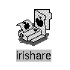

IRIShare
IRIShare kan kjøre på alle Silicon Graphics arbeidsstasjoner som er knyttet til et Ethernet som støtter AppleTalk (etherTalk). Du kan bruke IRIShare til å :
Du kan bruke IRIShare til å sette opp aksesser til Macintosh mapper (file volumes) og skrivere. Så kan du dra de nødvendige ikoner som representerer mapper og/eller skrivere, ut i din egen desktop og bruke dem som om de var knyttet direkte til Silicon Graphics arbeidsstasjonen.
Oppdatert, 6. juni 1995